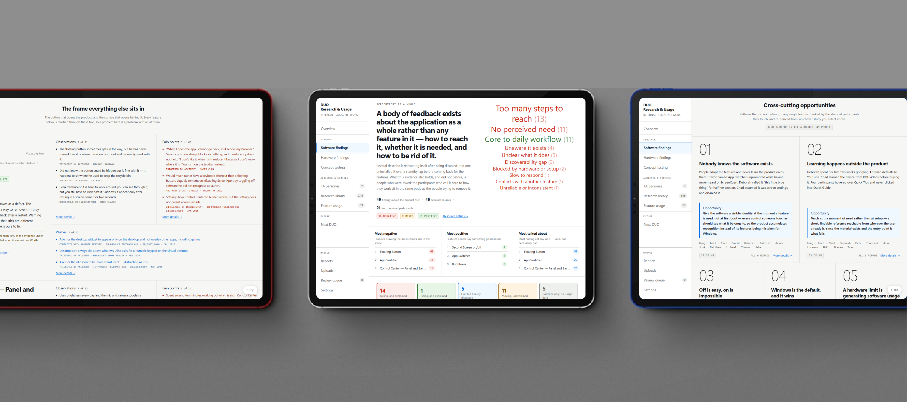
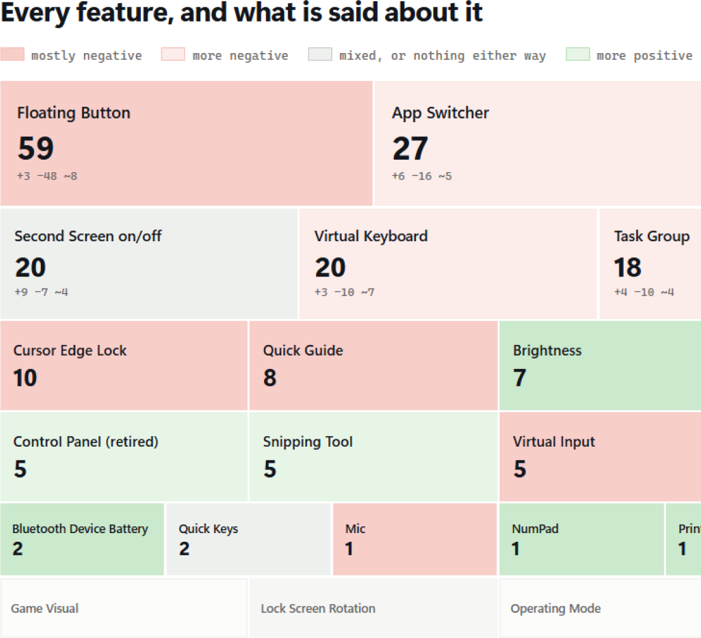
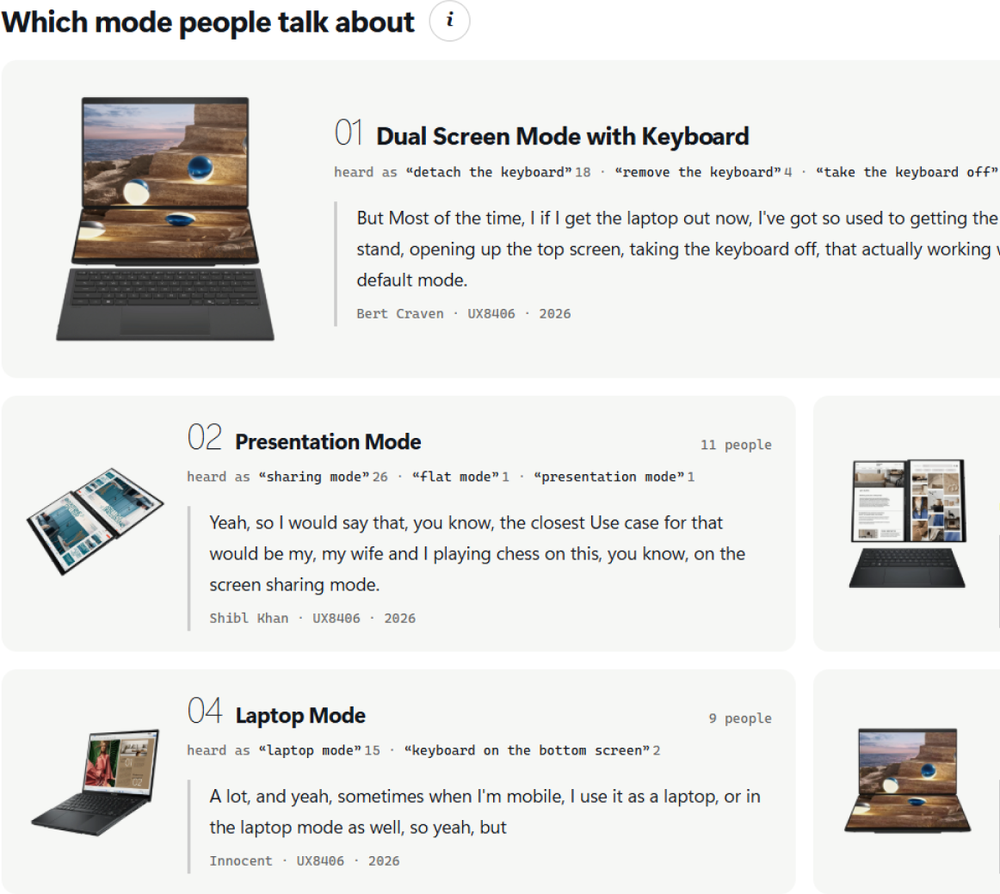
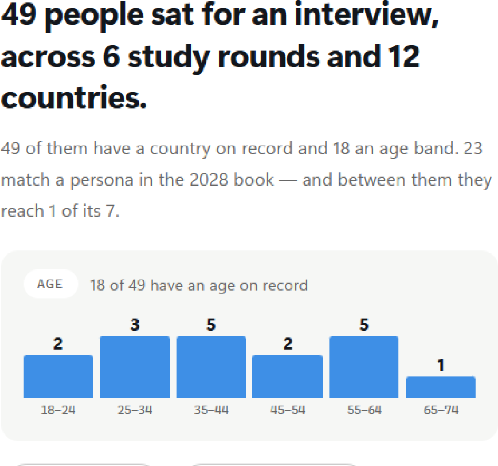

Case Study
DUO Insights Portal
Inspired by a key takeaway from the Ai4 Conference 2026 in Las Vegas, analysed which work process can be enhanced with AI rather than starting from the tool itself.
Noticing a gap within my organisation, I built a connected product intelligence portal that helps teams move from individual data points to a broader evidence–based understanding of user problems.
It cut the work of reading across accumulated research and usage data from months to days.
Start with the workflow, not the tool.
ROI = Validated Outcomes
Chief Customer Officer, AI of Toptal
Looking at our team’s workflow
Design Researchers
TA Playbook + BI Data + VOC + Online Research + User Interviews > Insight Generation > Action Plan
User Experience Designers
Brainstorming > Concept Proposals > Flow & Wireframe > Prototyping & Testing > Production-ready GUI & Behaviour
Industrial Design Designers
Brainstorming/Bodystorming > Concept Proposals > 3D Printed / Paper Mock-ups for Testing > Production-ready 3D File
The Challenge
We had data. We didn’t have the connections.
The team had accumulated years of product evidence across multiple sources. The challenge wasn’t a lack of research, it was that these sources lived in different places, with different owners, formats and contexts.
A usage dataset might tell us that a feature is rarely used. A Reddit discussion might explain why. A usability transcript might reveal the underlying interaction problem. A previous concept test might show that we’d already explored a potential solution.
The connections between these signals were difficult to see.
What we have
1. Feature usage data
What are people actually using? How frequently? Which features are falling behind despite high marketing efforts?
2. Voice of Customer
What are users saying on Reddit, Microsoft Store reviews, Feedback Hub, and other media platforms?
3. Usability research
What problems emerge when we observe users interacting with the product?
4. Concept testing
How have users responded to ideas we’ve explored in the past?



